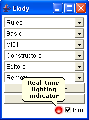
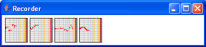

|  |  |
The recorder allows to enter new musical material in Elody. The real-time input is a MidiShare application connected by default to the physical MIDI-IN and which is constantly recording incoming MIDI events. The incoming stream is segmented in different objects when a rest of a least 3 seconds has been detected between two successive groups of MIDI events. When such events are received on the real-time input, an indicator lights in the bottom-right corner of Elody menu. A thru option allows to hear what is incoming.
The recorded objects are then available into the different boxes. The current version only records notes, keyon and keyoff MidiShare events. Durations of notes and intervals between notes are not quantified.